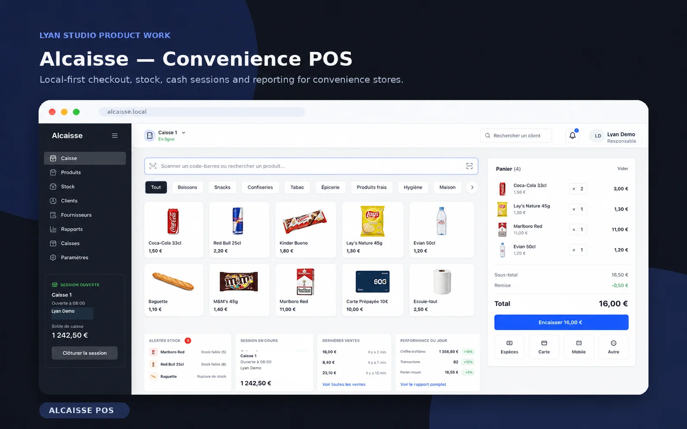

Desktop boundary
The React interface talks through typed Electron IPC. Database and device operations stay inside the main process with Node integration disabled in the renderer.
Electron · React · TypeScriptPRODUCT / ENGINEERING EVIDENCE
Retail checkout designed to work even when the internet does not.
An offline-first Windows desktop point-of-sale case study with transactional SQLite sales, stock consistency, receipts, backups and explicit hardware validation limits.

Existing product image from the portfolio. Screenshots illustrate the application, not independent proof of production use.
A retailer cannot afford to lose a sale, corrupt inventory or depend on a remote API at the counter. AlCaisse explores the transaction and recovery rules behind an offline Windows checkout application, rather than relying on a hosted dashboard.
Technology choices are explained through what they protect or enable, rather than listed as logos.
The React interface talks through typed Electron IPC. Database and device operations stay inside the main process with Node integration disabled in the renderer.
Electron · React · TypeScriptCash sessions, sales, stock decrements, cancellation and corrections live in SQLite. The project includes an executable critical-path smoke script.
SQLite · Local data modelReceipt printing has a test-to-file path and device adapters. Backups and guarded restore are implemented, but printer and drawer results must be verified physically.
Windows · ESC/POS · BackupsNo invented clients, invented numbers or imaginary certifications. Each statement has a clear verification boundary.
Private Electron entry point, main database service, local backup service, printer adapters and renderer are implemented.
Private repository; source review by authorized arrangement.
scripts/smoke-critical.js checks demo sales, stock changes, cancellation, cash totals and several related business records.
No fresh CI passing run was verified in this audit.
A Windows package workflow exists with native SQLite binary validation for target CPU architectures.
Pipeline existence does not prove the executable passed on real hardware.
Critical checkout persistence uses the local SQLite database and is designed not to require network access.
Power-loss testing, field validation and operational acceptance are still required.
A responsible prototype is explicit about the tests it passes and the production checks it has not passed.
EXPLORE THE ACTUAL WORK
The public presentation explains the intended checkout workflow. A packaged Windows demonstration and target-hardware acceptance remain the most important next evidence items.